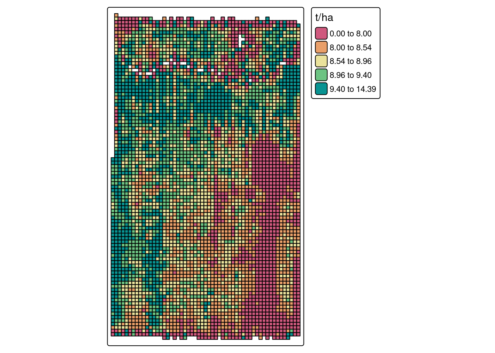

install.packages('agridat')Introduction
Working with yield monitor data can be quite challenging. The data can have several sources of error and accounting for all of them can be hard. For instance, there are instances in which the combine travels through an area that has been previously harvested, artificially recording low yielding points. There can also uncertainties associated with the combine travelling fast or slow, changing the effective harvested area from one observation to the next. There are many other instances in which we can end up with inadequate data when working with yield monitor data but this blog post cannot list all of them.
I wanted to give you an example of how we can use pacu to address some of these challenges. For that, we will use a data set contained in the agridat package.
Installing and loading the necessary packages
If you have not done so, you can install the agridat package using the following line of code:
To install pacu, you can either install the CRAN version:
install.packages('pacu')Or, you can install the development version from GitHub using the remotes package:
remotes::install_github('cldossantos/pacu')Now that we have installed the necessary packages we can load them and continue with our analysis.
library(pacu)
library(sf)
library(agridat)Working with the data
The agridat package contains a data set of yield observations collected from a corn field in Minnesota, the data set name is gartner.corn.
Here, we load the data set and look at the first rows:
data("gartner.corn")
head(gartner.corn) long lat mass time seconds dist moist elev
1 -93.97842 43.92726 16.54 0 3 116 18.5 1030.58
2 -93.97842 43.92723 22.52 3 3 159 16.7 1030.58
3 -93.97842 43.92718 27.01 6 3 169 17.2 1029.92
4 -93.97842 43.92713 30.24 9 3 221 17.2 1029.92
5 -93.97842 43.92708 30.95 12 3 234 17.3 1029.59
6 -93.97842 43.92702 33.57 15 3 227 17.5 1029.59There are a couple pieces of information that we need but that are currently not included in the data set. Namely, we need the combine swath and the yield. In the help page the author provided more information that can come in handy. For instance, he told us that the combine swath is 360 inches and provided a formula to calculate yield from the information in the data set. The yield will be calculated in units of bushel/acre. Let’s follow his formula:
gartner.corn$swath <- 360
gartner.corn$dry.grain <- with(gartner.corn, (mass * seconds * (100-moist) / (100-15.5)) / 56)
gartner.corn$harvested.area <- with(gartner.corn, (dist * swath) / 6272640)
gartner.corn$yield <- with(gartner.corn, dry.grain / harvested.area)Renaming some of the variables
Here, I rename some of the variables so that it is easier for me to understand what they represent.
names(gartner.corn) <- c('long', 'lat', 'flow', 'time', 'interval', 'distance', 'moisture', 'elevation', 'swath', 'dry.grain', 'harvested.area', 'yield')Now that we have added the necessary columns, we can convert the data frame into a sf object. The sf library has several methods for working with spatial data and pacu is heavily built upon those. We can also plot the data to look into the spatial patterns of the variables:
yield.data <- st_as_sf(gartner.corn,
coords = c('long', 'lat'),
crs = 'epsg:4326')
plot(yield.data)Looking at the yield data
If we focus on the yield (bu/ac), we can see some interesting features of this field. It seems like there is a waterway in the northern part of the field and there is an area in the mid-lower east part of the field that has lower yields.
plot(yield.data['yield'], pch = 15)Something that can also catch our attention is just how variable this data is. Let’s take a look at the distribution of the data as well. We can see that most of the data is between 100 and 160 bu/ac but the data ranges from 0 to 258 bu/ac.
plot(density(yield.data$yield), main = '')Considerations about cleaning the data
This kind of variability can be dealt with a variety of approaches. There are researchers who have proposed that we can remove anything that falls outside of 2 or 3 standard deviations from the mean. This is an empirical rule based on the assumption that the yield data follows a normal distribution. These thresholds represent \(\approx95.0\%\) and \(\approx99.7\%\) of the probability mass function of a normal distribution, respectively. However, this is based on two assumptions that are violated from the beginning:
- Independent samples: these are correlated in space
- Normal distribution: there is no guarantee this data will follow a normal distribution. These data are bound to be greater than zero.
There is ultimately no magical formula for cleaning yield data. Some of the empirical rules can work for some data sets but not for others. pacu offers options that do not rely on these rules but I feel that this is a subject for a different post.
Producing a yield map
To produce a yield map using pacu, we will use the pa_yield() function. The package offers two algorithms: simple and ritas. In this post I will not go into much detail about the algorithms. There is more information about this in this paper.
In this case, I will go straight to the ritas algorithm. The ritas algorithm involves several computationally intensive processes. To accelerate this process, we have enabled parallelization. The user can control this using the cores argument. Keep in mind though that parallelization has diminishing returns!
I did not supply units in this case because the pa_yield() function attempts to guess the units and I wanted to demonstrate that functionality. However, this is based on very simple rules and the function can make a mistake. In that case, the user can override the guess by passing the argument data.units.
yld <- pa_yield(input = yield.data,
algorithm = 'ritas',
unit.system = 'metric',
moisture.adj = 15.5,
cores = 5,
verbose = FALSE)Guessing units of interval to be sGuessing units of moisture to be %Guessing units of flow to be lb/sGuessing units of width to be inGuessing units of distance to be inTo look at the yield map, we can use the pa_plot() function.
pa_plot(yld, legend.outside = TRUE)
Conclusion
We have looked into how we can build yield maps from raw yield monitor data using pacu. This is a case in which we are processing the data at the field level. In a case in which we are processing data from on-farm experiments, there are a few more considerations we need to make. This is a subject for a future post!